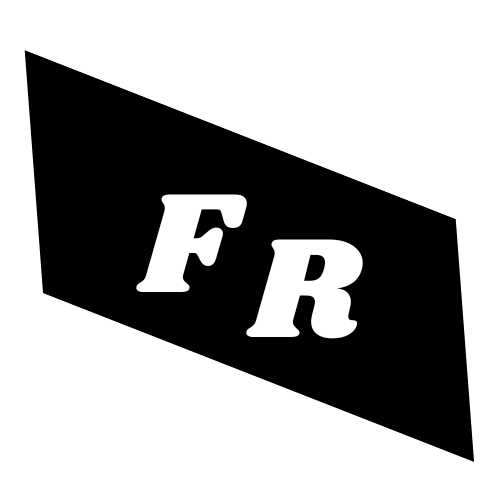

I am a Master's student in Automation Engineering with a strong passion for the aerospace sector and control systems, as well as for computer science in general. I have developed solid academic skills in modelling and simulation using MATLAB/Simulink, and I have a good knowledge of C programming and the Linux environment. I am looking for an environment where I can learn from experienced professionals and contribute to innovative projects in a team setting. I have been interested in these topics since I was 8 years old, because I used to thinker with PC's and other electronic stuff. Since my highschool years, I've also been very interested in astronomy, and space exploration more in general, and it's my most ambitious goal to be a part of the first Mars Humand Landing.